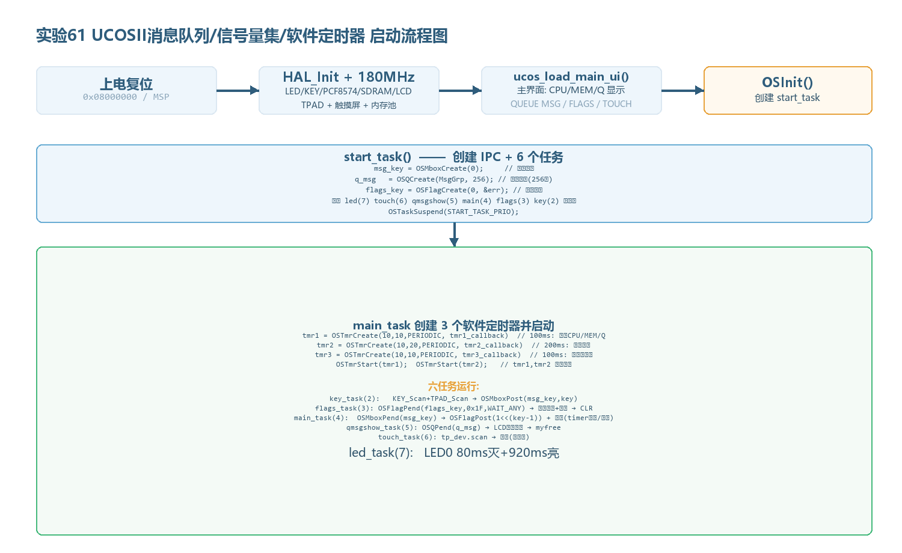
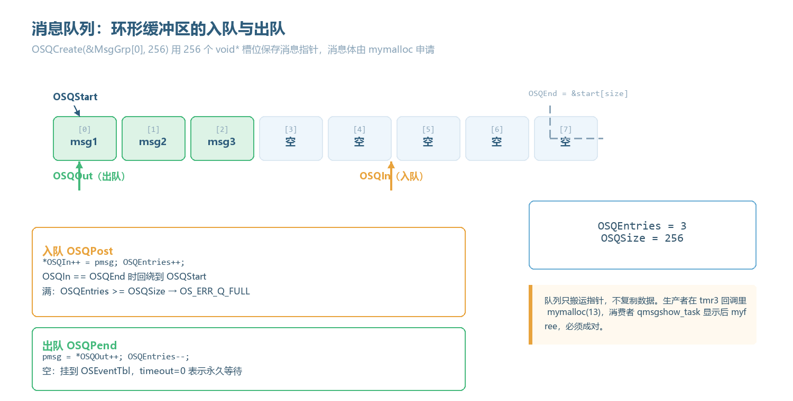
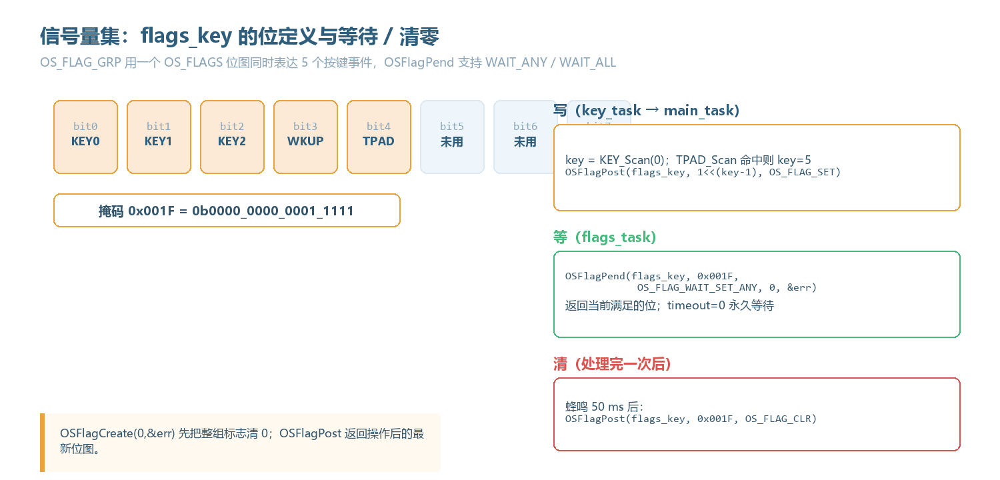
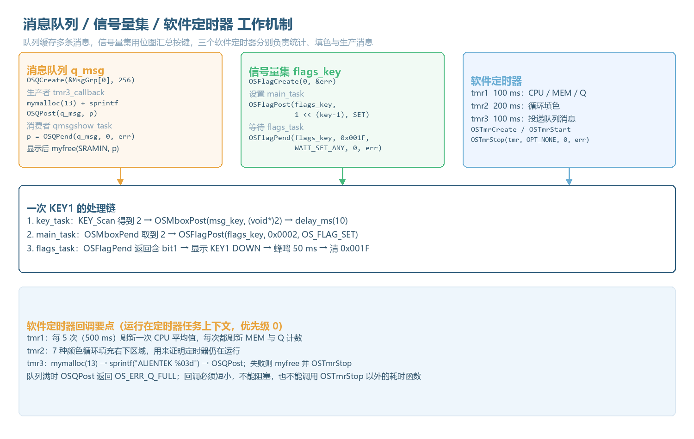
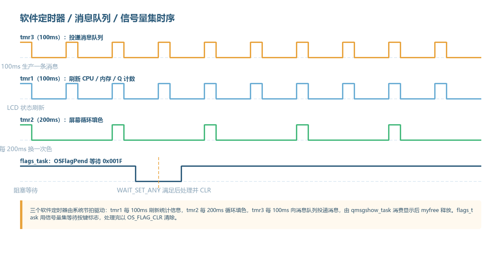

01 实验目标与硬件资源
三个软件定时器 + 一个 256 项消息队列 + 一组 5 位信号量集，把“按键、显示、生产、消费”彻底解耦
实验 61 是 UCOSII 三个实验中综合度最高的一个：消息队列缓存不定长消息，信号量集用位图汇总多个按键事件，软件定时器在定时器任务里周期性生产消息、刷新统计、循环填色。主任务只负责按键分发，显示任务只负责消费队列。
| 任务 | 优先级 | 栈 | 行为 |
|---|---|---|---|
| 定时器任务（内核创建） | 0 | OS_TASK_TMR_STK_SIZE | 等 OSTmrSignal，推进定时器轮并执行回调 |
| KEY | 2 | 128 | 扫描按键与 TPAD，键码投邮箱 |
| FLAGS | 3 | 128 | 等信号量集，显示键名并蜂鸣 50 ms，随后整组清零 |
| MAIN | 4 | 128 | 等邮箱，置位信号量集，分发键码并启停定时器 |
| QMSGSHOW | 5 | 128 | 等消息队列，显示消息后释放内存，每 500 ms 取一条 |
| TOUCH | 6 | 128 | 扫描触摸并在左下区域画红线 |
| LED | 7 | 64 | 10 ms 计数，第 8 次灭、第 100 次亮 |
| START | 10 | 64 | 建邮箱/队列/信号量集，OSStatInit，建 5 个任务后挂起 |
| 统计 / 空闲（内核创建） | 62 / 63 | — | CPU 使用率统计与兜底 |
| 按键 | 键码 | main_task 动作 | 现象 |
|---|---|---|---|
| KEY0 | 1 | LED1 = !LED1 | DS1 翻转，FLAGS 区显示 KEY0 DOWN |
| KEY1 | 2 | 启停 tmr3 | 队列开始/停止每 100 ms 生产消息 |
| KEY2 | 3 | LCD_Fill(0,221,129,...) | 清空左下触摸区 |
| WKUP | 4 | 停定时器 → TP_Adjust() → 重启 | 触摸校准并重载界面 |
| TPAD | 5 | 启停 tmr2 | 右下区域停止/继续循环填色 |
/* HARDWARE/KEY/key.h：前四个键码；TPAD 的 5 由 key_task 补上 */ #define KEY0_PRES 1 // DS1 翻转 #define KEY1_PRES 2 // 启停 tmr3 #define KEY2_PRES 3 // 清左下触摸区 #define WKUP_PRES 4 // 触摸校准 /* key_task：if (TPAD_Scan(0)) key = 5; → 启停 tmr2 */
- 定时器任务优先级 0，高于所有应用任务；回调一旦耗时，会直接拖慢按键与显示。
- 五个键码 1~5 既写进邮箱，也当作信号量集的位号：
1 << (key - 1)对应 bit0~bit4。 - 队列容量 256，生产 10 条/秒、消费 2 条/秒，净增 8 条/秒，约 32 s 后队列满并触发 tmr3 自停。
- FLAGS 任务处理完一次就整组清
0x001F，处理期间的叠加按键会被一并清掉，这是本实验的简化设计。
02 工程结构与源码地图
在实验60 的邮箱/信号量之上，增加 os_q.c、os_flag.c、os_tmr.c 三个模块
| 文件 | 本页关注点 |
|---|---|
| USER/main.c | start_task、main_task、flags_task、qmsgshow_task、key_task、三个回调 |
| UCOSII/uCOS-II/Source/os_q.c | OSQCreate、OSQPend、OSQPost |
| UCOSII/uCOS-II/Source/os_flag.c | OSFlagCreate、OSFlagPend、OSFlagPost、OS_FlagBlock |
| UCOSII/uCOS-II/Source/os_tmr.c | OSTmrCreate、OSTmrStart、OSTmrStop、OSTmr_Task |
| UCOSII/uCOS-II/Source/os_core.c | OSInit、OS_Sched、OS_EventTaskRdy、OS_TCBInit |
| UCOSII/uCOS-CONFIG/os_cfg.h | OS_MAX_QS=4、OS_MAX_FLAGS=5、OS_TMR_EN=1、定时器 100 Hz |
| UCOSII/Ports/.../os_cpu_c.c | OSTimeTickHook：每 10 个 OS tick 调一次 OSTmrSignal |
| SYSTEM/delay/delay.c | 1 ms SysTick，delay_ms 在 OS 启动后转 OSTimeDly |
/* includes.h：应用侧包含顺序 */ #include <stdio.h> #include "ucos_ii.h" // OS_Q、OS_FLAG_GRP、OS_TMR 与全部 API #include "os_cpu.h" // OS_ENTER_CRITICAL、OS_TASK_SW #include "os_cfg.h" // OS_MAX_QS、OS_MAX_FLAGS、OS_TMR_EN #include "app_cfg.h"
- 队列控制块最多 4 个、信号量集最多 5 组、软件定时器最多 16 个，全部是静态池，运行期不 malloc 控制块。
- 消息体本身由
mymalloc(SRAMIN,13)从内部内存池申请，队列只保存指针。 - 软件定时器的“节拍”与 OS 的 1 ms tick 不同：前者 100 Hz，即 10 ms 一个定时器 tick。
03 启动流程总览
main 里只创建开始任务；队列、信号量集、统计任务都在 start_task 内完成

int main(void)
{
HAL_Init();
Stm32_Clock_Init(360, 25, 2, 8); // 180 MHz
delay_init(180);
uart_init(115200);
LED_Init();
KEY_Init();
PCF8574_Init(); // 蜂鸣器
SDRAM_Init();
LCD_Init();
TPAD_Init(2); // 电容触摸按键
tp_dev.init(); // 电阻/电容屏
my_mem_init(SRAMIN); // 内部内存池，供 13 字节消息使用
ucos_load_main_ui(); // 静态界面先画好
OSInit(); // 建空闲 63、统计 62、定时器任务 0
OSTaskCreateExt((void (*)(void *))start_task, ... START_TASK_PRIO ...);
OSStart(); // 切到 start_task
}
OSInit在OS_TMR_EN=1时会创建优先级 0 的定时器任务，并创建它专用的信号量。- 内存池必须在任何
mymalloc之前初始化，否则 tmr3 回调申请 13 字节会失败。 - 界面先画、任务后建，避免任务运行时访问尚未配置的 LCD 或触摸芯片。
- 所有任务的
opt都含STK_CHK|STK_CLR|SAVE_FP，与实验60 保持一致。
04 时钟、节拍与定时器时基
OS tick 1 ms，定时器 tick 10 ms；OSTmrCreate 的 dly/period 单位是定时器 tick
void OSTimeTickHook(void)
{
#if OS_APP_HOOKS_EN > 0u
App_TimeTickHook();
#endif
#if OS_TMR_EN > 0u
OSTmrCtr++;
if (OSTmrCtr >= (OS_TICKS_PER_SEC / OS_TMR_CFG_TICKS_PER_SEC)) {
OSTmrCtr = 0; // 1000 / 100 = 每 10 个 OS tick
OSTmrSignal(); // OSSemPost(OSTmrSemSignal)
}
#endif
}
/* os_cfg.h：两个频率不要混淆 */ #define OS_TICKS_PER_SEC 1000u // OS 节拍 1 ms：延时、超时 #define OS_TMR_CFG_TICKS_PER_SEC 100u // 定时器节拍 10 ms #define OS_TMR_CFG_WHEEL_SIZE 8u // 定时器轮 8 个槽 #define OS_TASK_TMR_PRIO 0u // 定时器任务最高优先级
OSTmrCreate(10, 10, ...)的 10 是 10 个定时器 tick，即 100 ms，而不是 10 ms。- 定时器任务每次被唤醒，
OSTmrTime++，槽号= OSTmrTime % 8。 - SysTick 仍由
delay_init配成 1 ms；OSTimeTickHook只是在这 1 ms 节拍里再分频出 100 Hz。 - 定时器任务优先级 0，回调运行时其他任务都让路，所以回调必须短小。
OS_CPU_SysTickInit，而是由 delay_init(180) 设置 SysTick->LOAD = 180000 并打开 TICKINT，效果等价。05 启动汇编与 main 初始化
向量表弱符号被 os_cpu_a.asm 与 delay.c 的强符号覆盖，FPU 在 __main 前使能
Reset_Handler PROC
LDR R0, =SystemInit
BLX R0
LDR.W R0, =0xE000ED88 ; CPACR
LDR R1, [R0]
ORR R1, R1, #(0xF << 20) ; CP10/CP11 全开
STR R1, [R0]
DSB
ISB
LDR R0, =__main
BX R0 ; 初始化 .data/.bss 后进 main
ENDP
DCD PendSV_Handler ; 启动文件里是 [WEAK]
DCD SysTick_Handler ; delay.c 提供强符号
SystemInit只做最基础的时钟/向量表设置，真正的 180 MHz 在Stm32_Clock_Init。- FPU 使能必须早于任何浮点指令；
SAVE_FP只是让任务栈预留 S0~S31 的保存空间。 - 启动文件的
PendSV_Handler只有死循环，链接时被内核强符号替换，否则任务切换会卡死。 __main完成 C 运行时初始化，全局指针msg_key/q_msg/flags_key初值都是 0。
06 消息队列：环形缓冲与 OSQ API
队列只搬指针：入队在 OSQIn，出队在 OSQOut，绕回 OSQStart 形成环

typedef struct os_q {
struct os_q *OSQPtr; /* 空闲队列链指针 */
void **OSQStart; /* 缓冲区首地址 &MsgGrp[0] */
void **OSQEnd; /* &MsgGrp[256]，哨兵位置 */
void **OSQIn; /* 下一条消息写入位置 */
void **OSQOut; /* 下一条消息取出位置 */
INT16U OSQSize; /* 256 */
INT16U OSQEntries; /* 当前条数 */
} OS_Q;
OS_EVENT *OSQCreate(void **start, INT16U size)
{
OS_EVENT *pevent;
OS_Q *pq;
OS_ENTER_CRITICAL();
pevent = OSEventFreeList; // 先取事件块
if (pevent != (OS_EVENT *)0) {
OSEventFreeList = (OS_EVENT *)OSEventFreeList->OSEventPtr;
if (OSQFreeList != (OS_Q *)0) { // 再取队列控制块
pq = OSQFreeList;
OSQFreeList = OSQFreeList->OSQPtr;
OS_EXIT_CRITICAL();
pq->OSQStart = start;
pq->OSQEnd = &start[size];
pq->OSQIn = start;
pq->OSQOut = start;
pq->OSQSize = size;
pq->OSQEntries = 0u;
pevent->OSEventType = OS_EVENT_TYPE_Q;
pevent->OSEventCnt = 0u;
pevent->OSEventPtr = (void *)pq; // 事件块指向队列
OS_EventWaitListInit(pevent);
return (pevent);
}
}
...
}
void *OSQPend(OS_EVENT *pevent, INT32U timeout, INT8U *perr)
{
...
OS_ENTER_CRITICAL();
pq = (OS_Q *)pevent->OSEventPtr;
if (pq->OSQEntries > 0u) { // 有消息，直接取
pmsg = *pq->OSQOut++;
pq->OSQEntries--;
if (pq->OSQOut == pq->OSQEnd) { // 取到哨兵，回绕
pq->OSQOut = pq->OSQStart;
}
OS_EXIT_CRITICAL();
*perr = OS_ERR_NONE;
return (pmsg);
}
OSTCBCur->OSTCBStat |= OS_STAT_Q; // 标记在等队列
OSTCBCur->OSTCBDly = timeout; // qmsgshow 传 0：永久等待
OS_EventTaskWait(pevent);
OS_EXIT_CRITICAL();
OS_Sched();
...
pmsg = OSTCBCur->OSTCBMsg; // 被唤醒时消息挂在这里
...
return (pmsg);
}
INT8U OSQPost(OS_EVENT *pevent, void *pmsg)
{
OS_ENTER_CRITICAL();
if (pevent->OSEventGrp != 0u) { // 有任务在等，直接交给它
(void)OS_EventTaskRdy(pevent, pmsg, OS_STAT_Q, OS_STAT_PEND_OK);
OS_EXIT_CRITICAL();
OS_Sched();
return (OS_ERR_NONE);
}
pq = (OS_Q *)pevent->OSEventPtr;
if (pq->OSQEntries >= pq->OSQSize) { // 256 条已满
OS_EXIT_CRITICAL();
return (OS_ERR_Q_FULL);
}
*pq->OSQIn++ = pmsg;
pq->OSQEntries++;
if (pq->OSQIn == pq->OSQEnd) { // 写指针回绕
pq->OSQIn = pq->OSQStart;
}
OS_EXIT_CRITICAL();
return (OS_ERR_NONE);
}
OSQCreate(&MsgGrp[0], 256)的缓冲区是全局void *MsgGrp[256]，控制块只有 4 个。- 队列满时
OSQPost返回OS_ERR_Q_FULL，消息指针仍归生产者所有，必须自己释放。 OSQPend的 timeout=0 表示永久等待；qmsgshow 任务没有消息就一直阻塞，不占 CPU。- 取走消息不会释放消息体，
myfree(SRAMIN, p)是消费者必须做的配对操作。 - 有人等待时 Post 直接把消息写进
OSTCBMsg并唤醒任务，不经过环形缓冲。
07 任务控制块与就绪表
等待队列、等待信号量集、等待邮箱，最终都落到 OSTCBStat 与就绪位图
typedef struct os_tcb {
OS_STK *OSTCBStkPtr; /* 当前栈顶，PendSV 保存/恢复 */
OS_STK *OSTCBStkBottom;
INT32U OSTCBStkSize;
INT16U OSTCBOpt; /* STK_CHK | STK_CLR | SAVE_FP */
INT8U OSTCBStat; /* RDY/SEM/MBOX/Q/SUSPEND/FLAG 位 */
INT8U OSTCBStatPend; /* OK / TIMEOUT / ABORT */
INT8U OSTCBPrio;
INT8U OSTCBX, OSTCBY; /* 优先级拆成行/列 */
INT8U OSTCBBitX, OSTCBBitY;
INT16U OSTCBDly; /* 剩余延时 tick，0 表示不延时 */
OS_EVENT *OSTCBEventPtr; /* 正在等待的事件块 */
void *OSTCBMsg; /* 邮箱/队列直接交付的消息 */
OS_FLAGS OSTCBFlagsRdy; /* 本次满足的信号量位 */
} OS_TCB;
/* os_core.c OS_TCBInit：把优先级拆成位图坐标 */ ptcb->OSTCBY = (INT8U)(prio >> 3u); // 行号 0~7 ptcb->OSTCBX = (INT8U)(prio & 0x07u); // 列号 0~7 ptcb->OSTCBBitY = (OS_PRIO)(1uL << ptcb->OSTCBY); ptcb->OSTCBBitX = (OS_PRIO)(1uL << ptcb->OSTCBX); ... OSRdyGrp |= ptcb->OSTCBBitY; // 行就绪 OSRdyTbl[ptcb->OSTCBY] |= ptcb->OSTCBBitX; // 列就绪 /* OS_SchedNew：找最高优先级 O(1) */ y = OSUnMapTbl[OSRdyGrp]; OSPrioHighRdy = (INT8U)((y << 3u) + OSUnMapTbl[OSRdyTbl[y]]);
- 优先级 2 的 KEY 任务：
y=0, x=2，行位0x01，列位0x04。 - 等待事件时
OS_EventTaskWait同时清OSRdyTbl位、置OSEventTbl位，任务从就绪表消失。 - 被唤醒时
OS_EventTaskRdy把OSTCBDly清 0、清等待类型位、重新置就绪位，并写OSTCBFlagsRdy/OSTCBMsg。 - 延时的任务
OSTCBDly > 0，SysTick 每 tick 减 1，减到 0 时由OSTimeTick置就绪。 OS_STAT_PEND_ANY是 SEM/MBOX/Q/MUTEX/FLAG 的并集，用于判断“是否还在等事件”。
08 信号量集：位图等待与 OSFlag API
5 个按键对应 bit0~bit4；WAIT_SET_ANY 命中任一位就返回，处理完整组清 0

typedef struct os_flag_grp {
INT8U OSFlagType; /* OS_EVENT_TYPE_FLAG */
void *OSFlagWaitList; /* OS_FLAG_NODE 链表头 */
OS_FLAGS OSFlagFlags; /* 32 位位图，本实验只用低 5 位 */
INT8U *OSFlagName;
} OS_FLAG_GRP;
typedef struct os_flag_node {
void *OSFlagNodeNext; /* 下一个等待节点 */
void *OSFlagNodePrev;
void *OSFlagNodeTCB; /* 等待任务的 TCB */
void *OSFlagNodeFlagGrp;
OS_FLAGS OSFlagNodeFlags; /* 关心的位 0x001F */
INT8U OSFlagNodeWaitType; /* WAIT_SET_ANY 等 */
} OS_FLAG_NODE;
OS_FLAG_GRP *OSFlagCreate(OS_FLAGS flags, INT8U *perr)
{
...
OS_ENTER_CRITICAL();
pgrp = OSFlagFreeList; // 最多 5 组
if (pgrp != (OS_FLAG_GRP *)0) {
OSFlagFreeList = (OS_FLAG_GRP *)OSFlagFreeList->OSFlagWaitList;
pgrp->OSFlagType = OS_EVENT_TYPE_FLAG;
pgrp->OSFlagFlags = flags; // 本实验传 0：全部清零
pgrp->OSFlagWaitList = (void *)0;
...
}
return (pgrp);
}
OS_FLAGS OSFlagPend(OS_FLAG_GRP *pgrp, OS_FLAGS flags, INT8U wait_type,
INT32U timeout, INT8U *perr)
{
OS_FLAG_NODE node; // 节点在任务栈上，不 malloc
...
OS_ENTER_CRITICAL();
switch (wait_type) {
case OS_FLAG_WAIT_SET_ANY:
flags_rdy = (OS_FLAGS)(pgrp->OSFlagFlags & flags);
if (flags_rdy != (OS_FLAGS)0) { // 任一位已置位，立即返回
OSTCBCur->OSTCBFlagsRdy = flags_rdy;
OS_EXIT_CRITICAL();
*perr = OS_ERR_NONE;
return (flags_rdy);
} else {
OS_FlagBlock(pgrp, &node, flags, wait_type, timeout);
OS_EXIT_CRITICAL();
}
break;
...
}
OS_Sched();
OS_ENTER_CRITICAL();
...
flags_cur = pgrp->OSFlagFlags;
OS_EXIT_CRITICAL();
*perr = OS_ERR_NONE;
return (flags_cur);
}
OS_FLAGS OSFlagPost(OS_FLAG_GRP *pgrp, OS_FLAGS flags, INT8U opt, INT8U *perr)
{
...
OS_ENTER_CRITICAL();
if (opt == OS_FLAG_SET) {
pgrp->OSFlagFlags |= flags; // 置位
} else {
pgrp->OSFlagFlags &= (OS_FLAGS)~flags; // 清零
}
pnode = (OS_FLAG_NODE *)pgrp->OSFlagWaitList;
while (pnode != (OS_FLAG_NODE *)0) { // 逐个检查等待者是否满足
switch (pnode->OSFlagNodeWaitType) { ... }
pnode = (OS_FLAG_NODE *)pnode->OSFlagNodeNext;
}
OS_EXIT_CRITICAL();
if (sched == OS_TRUE) {
OS_Sched();
}
flags_cur = pgrp->OSFlagFlags;
return (flags_cur);
}
void flags_task(void *pdata)
{
u16 flags;
u8 err;
while (1) {
flags = OSFlagPend(flags_key, 0x001F, OS_FLAG_WAIT_SET_ANY, 0, &err);
if (flags & 0x0001) LCD_ShowString(140, 162, 240, 16, 16, "KEY0 DOWN ");
if (flags & 0x0002) LCD_ShowString(140, 162, 240, 16, 16, "KEY1 DOWN ");
if (flags & 0x0004) LCD_ShowString(140, 162, 240, 16, 16, "KEY2 DOWN ");
if (flags & 0x0008) LCD_ShowString(140, 162, 240, 16, 16, "KEY_UP DOWN");
if (flags & 0x0010) LCD_ShowString(140, 162, 240, 16, 16, "TPAD DOWN ");
PCF8574_WriteBit(BEEP_IO, 0); // 蜂鸣 50 ms
delay_ms(50);
PCF8574_WriteBit(BEEP_IO, 1);
OSFlagPost(flags_key, 0x001F, OS_FLAG_CLR, &err); // 整组清零
}
}
OSFlagCreate(0, &err)的 0 是初值，不是掩码；5 个位初始全为 0。0x001F只关心 bit0~bit4，高位即使被置位也不会让WAIT_SET_ANY命中。- 等待节点
node是OSFlagPend的局部变量，位于 FLAGS 任务栈上，所以 FLAGS 栈不能太小。 - timeout=0 是永久等待；被
OSFlagPost唤醒后返回的是整组当前值，需要自己按位判断。 OSFlagPost(flags_key, 1 << (key - 1), OS_FLAG_SET, &err)在 main_task 中调用，键码 1 对应 bit0。
09 临界区与中断嵌套
队列环形指针、信号量位图、就绪表必须原子更新；方法 3 用 PRIMASK 支持嵌套
/* os_cpu.h：临界区方法 3 */
#define OS_CRITICAL_METHOD 3u
#define OS_ENTER_CRITICAL() { cpu_sr = OS_CPU_SR_Save(); }
#define OS_EXIT_CRITICAL() { OS_CPU_SR_Restore(cpu_sr); }
/* os_cpu_a.asm */ OS_CPU_SR_Save MRS R0, PRIMASK ; 保存进入前的屏蔽状态 CPSID I ; 关可屏蔽中断 BX LR OS_CPU_SR_Restore MSR PRIMASK, R0 ; 恢复旧值，嵌套不会提前开中断 BX LR
void touch_task(void *pdata)
{
u16 lastpos[2];
while (1) {
tp_dev.scan(0);
if (tp_dev.sta & TP_PRES_DOWN) {
if (tp_dev.x[0] < 129 && tp_dev.y[0] > 221) {
if (lastpos[0] == 0xFFFF) {
lastpos[0] = tp_dev.x[0];
lastpos[1] = tp_dev.y[0];
}
OS_ENTER_CRITICAL(); // 防止 MAIN/QMSGSHOW 同时写 LCD
lcd_draw_bline(lastpos[0], lastpos[1], tp_dev.x[0], tp_dev.y[0], 2, RED);
OS_EXIT_CRITICAL();
lastpos[0] = tp_dev.x[0];
lastpos[1] = tp_dev.y[0];
}
} else {
lastpos[0] = 0xFFFF;
delay_ms(10);
}
}
}
OSQPost的*OSQIn++、OSQEntries++、回绕判断必须在同一个临界区里完成，否则会丢消息。OSFlagPost修改位图后要遍历等待链表，同样整段关中断。- 方法 3 保存的是旧 PRIMASK，不是无条件
CPSIE I，所以嵌套调用安全。 - 触摸画线关中断时间很短；若在临界区里调用
delay_ms或 Pend，系统会直接卡死。 - 定时器回调里
OSQPost内部也会关中断，回调本身不需要再包一层。
10 调度与 PendSV 上下文切换
OS_Sched 只选最高优先级并触发 PendSV；真正保存寄存器在 PendSV 里完成
void OS_Sched(void)
{
OS_ENTER_CRITICAL();
if ((OSIntNesting == 0u) && (OSLockNesting == 0u)) {
y = OSUnMapTbl[OSRdyGrp];
OSPrioHighRdy = (INT8U)((y << 3u) + OSUnMapTbl[OSRdyTbl[y]]);
if (OSPrioHighRdy != OSPrioCur) {
OSTCBHighRdy = OSTCBPrioTbl[OSPrioHighRdy];
OSCtxSwCtr++;
OS_TASK_SW(); // 触发 PendSV
}
}
OS_EXIT_CRITICAL();
}
PendSV_Handler
CPSID I
MRS R0, PSP
CBZ R0, PendSV_nosave
SUBS R0, R0, #0x20
STM R0, {R4-R11} ; 保存旧任务 R4-R11
LDR R1, =OSTCBCur
LDR R1, [R1]
STR R0, [R1] ; 更新 OSTCBStkPtr
PendSV_nosave
PUSH {R14}
LDR R0, =OSTaskSwHook
BLX R0
POP {R14}
LDR R0, =OSPrioCur
LDR R1, =OSPrioHighRdy
LDRB R2, [R1]
STRB R2, [R0] ; OSPrioCur = OSPrioHighRdy
LDR R0, =OSTCBCur
LDR R1, =OSTCBHighRdy
LDR R2, [R1]
STR R2, [R0] ; OSTCBCur = OSTCBHighRdy
LDR R0, [R2]
LDM R0, {R4-R11}
ADDS R0, R0, #0x20
MSR PSP, R0
ORR LR, LR, #0xF4
CPSIE I
BX LR
OSLockNesting非 0 时OS_Sched直接返回；OSTmrCreate用OSSchedLock保护定时器池。- PendSV 优先级最低，所有中断先处理完，再统一切换任务，避免中断里直接切栈。
- 硬件异常帧保存 R0-R3/R12/LR/PC/xPSR，PendSV 只补 R4-R11，所以任务栈布局是“硬件帧 + 软件帧”。
ORR LR, LR, #0xF4让异常返回后使用 PSP 与 Thread 模式，任务继续运行在自己的栈上。- 定时器任务优先级 0，一旦被唤醒就会抢占当前应用任务，回调里不能做耗时操作。
11 软件定时器：定时器轮与回调
单次/周期、启动/停止、回调参数，全部由 OSTmr_* 管理，回调运行在定时器任务
typedef struct os_tmr {
INT8U OSTmrType; /* OS_TMR_TYPE */
OS_TMR_CALLBACK OSTmrCallback; /* void (*)(OS_TMR *, void *) */
void *OSTmrCallbackArg; /* 创建时传入的参数 */
void *OSTmrNext;
void *OSTmrPrev;
INT32U OSTmrMatch; /* OSTmrTime == Match 时到期 */
INT32U OSTmrDly; /* 首次延时，单位定时器 tick */
INT32U OSTmrPeriod; /* 周期，单位定时器 tick */
INT8U *OSTmrName;
INT8U OSTmrOpt; /* ONE_SHOT / PERIODIC */
INT8U OSTmrState; /* UNUSED/RUNNING/STOPPED/COMPLETED */
} OS_TMR;
OS_TMR *OSTmrCreate(INT32U dly, INT32U period, INT8U opt,
OS_TMR_CALLBACK callback, void *callback_arg,
INT8U *pname, INT8U *perr)
{
...
OSSchedLock();
ptmr = OSTmr_Alloc(); // 从 16 个定时器池取
if (ptmr == (OS_TMR *)0) {
OSSchedUnlock();
*perr = OS_ERR_TMR_NON_AVAIL;
return ((OS_TMR *)0);
}
ptmr->OSTmrState = OS_TMR_STATE_STOPPED;
ptmr->OSTmrDly = dly;
ptmr->OSTmrPeriod = period;
ptmr->OSTmrOpt = opt;
ptmr->OSTmrCallback = callback;
ptmr->OSTmrCallbackArg = callback_arg;
...
*perr = OS_ERR_NONE;
return (ptmr);
}
/* main_task 中的实际调用：10 tick = 100 ms */
tmr1 = OSTmrCreate(10, 10, OS_TMR_OPT_PERIODIC, (OS_TMR_CALLBACK)tmr1_callback, 0, "tmr1", &err);
tmr2 = OSTmrCreate(10, 20, OS_TMR_OPT_PERIODIC, (OS_TMR_CALLBACK)tmr2_callback, 0, "tmr2", &err);
tmr3 = OSTmrCreate(10, 10, OS_TMR_OPT_PERIODIC, (OS_TMR_CALLBACK)tmr3_callback, 0, "tmr3", &err);
BOOLEAN OSTmrStart(OS_TMR *ptmr, INT8U *perr)
{
...
OSSchedLock();
switch (ptmr->OSTmrState) {
case OS_TMR_STATE_RUNNING: // 已在跑：重装
OSTmr_Unlink(ptmr);
OSTmr_Link(ptmr, OS_TMR_LINK_DLY);
...
return (OS_TRUE);
case OS_TMR_STATE_STOPPED:
case OS_TMR_STATE_COMPLETED:
OSTmr_Link(ptmr, OS_TMR_LINK_DLY); // 首次挂到定时器轮
...
return (OS_TRUE);
...
}
}
BOOLEAN OSTmrStop(OS_TMR *ptmr, INT8U opt, void *callback_arg, INT8U *perr)
{
...
case OS_TMR_STATE_RUNNING:
OSTmr_Unlink(ptmr); // 从轮上摘下
if (opt == OS_TMR_OPT_CALLBACK) {
(*pfnct)((void *)ptmr, ptmr->OSTmrCallbackArg);
}
...
return (OS_TRUE);
case OS_TMR_STATE_STOPPED:
case OS_TMR_STATE_COMPLETED:
*perr = OS_ERR_TMR_STOPPED; // 已经停着，也算成功
return (OS_TRUE);
...
}
static void OSTmr_Task(void *p_arg)
{
for (;;) {
OSSemPend(OSTmrSemSignal, 0u, &err); // 每 10 ms 一个信号
OSSchedLock();
OSTmrTime++;
spoke = (INT16U)(OSTmrTime % OS_TMR_CFG_WHEEL_SIZE);
pspoke = &OSTmrWheelTbl[spoke];
ptmr = pspoke->OSTmrFirst;
while (ptmr != (OS_TMR *)0) {
ptmr_next = (OS_TMR *)ptmr->OSTmrNext;
if (OSTmrTime == ptmr->OSTmrMatch) {
OSTmr_Unlink(ptmr);
if (ptmr->OSTmrOpt == OS_TMR_OPT_PERIODIC) {
OSTmr_Link(ptmr, OS_TMR_LINK_PERIODIC);
} else {
ptmr->OSTmrState = OS_TMR_STATE_COMPLETED;
}
(*ptmr->OSTmrCallback)((void *)ptmr, ptmr->OSTmrCallbackArg);
}
ptmr = ptmr_next;
}
OSSchedUnlock();
}
}
- 定时器状态：STOPPED（未启动）、RUNNING（在轮上）、COMPLETED（单次已完成）、UNUSED（已删除）。
OSTmrStart对运行中的定时器会先摘链再重挂，等于“重新计时”。OSTmrStop只摘链，不释放定时器对象；再次 Start 还能用，删除要用OSTmrDel。- 周期定时器到期后由
OSTmr_Link(...PERIODIC)重挂；单次定时器置 COMPLETED 后不再执行。 OSTmr_Task用OSSchedLock而不是关中断，防止遍历定时器轮时链被改。
12 三定时器与 IPC 数据流
tmr1 统计、tmr2 填色、tmr3 生产消息；队列与信号量集把四个任务串成一条链

void start_task(void *pdata)
{
OS_CPU_SR cpu_sr = 0;
u8 err;
pdata = pdata;
msg_key = OSMboxCreate((void *)0); // 键码邮箱
q_msg = OSQCreate(&MsgGrp[0], 256);// 256 条消息队列
flags_key = OSFlagCreate(0, &err); // 5 位信号量集，初值 0
OSStatInit(); // 统计任务采样
OS_ENTER_CRITICAL();
OSTaskCreateExt(led_task, ... LED_TASK_PRIO ...);
OSTaskCreateExt(touch_task, ... TOUCH_TASK_PRIO ...);
OSTaskCreateExt(qmsgshow_task, ... QMSGSHOW_TASK_PRIO ...);
OSTaskCreateExt(main_task, ... MAIN_TASK_PRIO ...);
OSTaskCreateExt(flags_task, ... FLAGS_TASK_PRIO ...);
OSTaskCreateExt(key_task, ... KEY_TASK_PRIO ...);
OS_EXIT_CRITICAL();
OSTaskSuspend(START_TASK_PRIO);
}
void main_task(void *pdata)
{
u32 key = 0;
u8 err;
u8 tmr2sta = 1;
u8 tmr3sta = 0;
u8 flagsclrt = 0;
/* 定时器在 main_task 里创建，不是在 start_task */
tmr1 = OSTmrCreate(10, 10, OS_TMR_OPT_PERIODIC, (OS_TMR_CALLBACK)tmr1_callback, 0, "tmr1", &err);
tmr2 = OSTmrCreate(10, 20, OS_TMR_OPT_PERIODIC, (OS_TMR_CALLBACK)tmr2_callback, 0, "tmr2", &err);
tmr3 = OSTmrCreate(10, 10, OS_TMR_OPT_PERIODIC, (OS_TMR_CALLBACK)tmr3_callback, 0, "tmr3", &err);
OSTmrStart(tmr1, &err);
OSTmrStart(tmr2, &err);
while (1) {
key = (u32)OSMboxPend(msg_key, 10, &err);
if (key) {
flagsclrt = 51; // 51 × 10 ms ≈ 500 ms 后清显示
OSFlagPost(flags_key, 1 << (key - 1), OS_FLAG_SET, &err);
}
switch (key) {
case 1: LED1 = !LED1; break;
case 2: tmr3sta = !tmr3sta;
if (tmr3sta) OSTmrStart(tmr3, &err);
else OSTmrStop(tmr3, OS_TMR_OPT_NONE, 0, &err);
break;
case 3: LCD_Fill(0, 221, 129, lcddev.height - 1, WHITE); break;
case 4: ... TP_Adjust(); ucos_load_main_ui(); break;
case 5: tmr2sta = !tmr2sta; ... break;
}
delay_ms(10);
}
}
- KEY 任务拿到键码后只投邮箱；MAIN 任务置信号量位；FLAGS 任务负责显示与蜂鸣，职责清晰。
- tmr3 由 KEY1 启停，只有启动后才每 100 ms 往队列投一条 13 字节消息。
- tmr1 与 tmr2 在
main_task启动时创建并立即启动，界面一进入循环就开始刷新。 - WKUP 校准时先停 tmr1/tmr2、挂起 TOUCH/QMSGSHOW，避免校准界面被定时器覆盖。
- 所有定时器都是 PERIODIC；tmr3 因队列满而
OSTmrStop后变为 STOPPED，需要再次按键才能重启。
13 实验现象与调试验证
生产 10 条/秒、消费 2 条/秒，队列约 32 s 填满，正好用来观察 Q_FULL 与定时器自停

void qmsgshow_task(void *pdata)
{
u8 *p;
u8 err;
while (1) {
p = OSQPend(q_msg, 0, &err); // 永久等待一条消息
LCD_ShowString(5, 170, 240, 16, 16, p); // 显示消息体
myfree(SRAMIN, p); // 与 tmr3 的 mymalloc 配对
delay_ms(500); // 每秒最多消费 2 条
}
}
| 操作 / 时刻 | 预期现象 | 调试确认 |
|---|---|---|
| 上电 | 界面出现；右下颜色每 200 ms 变化；CPU/MEM/Q 数字刷新 | Watch 看 OSCPUUsage、((OS_Q *)q_msg->OSEventPtr)->OSQEntries |
| KEY0 | DS1 翻转，FLAGS 区显示 KEY0 DOWN，蜂鸣 50 ms | flags_key->OSFlagFlags 先置 0x0001，再被清 0 |
| KEY1 启动 tmr3 | Message 区每 100 ms 出现新消息，Q 计数持续上升 | tmr3 处于 RUNNING，生产者每 100 ms 调 OSQPost |
| 约 32 s 后 | 队列填满 256 条，消息停止增加，Q 计数不再上升 | tmr3 回调收到 OS_ERR_Q_FULL，myfree 后自停 |
| KEY2 | 左下触摸区被清空 | 只清 x ≤ 129, y ≥ 221 区域 |
| TPAD | 右下填色停止/继续 | tmr2 状态在 STOPPED / RUNNING 间切换 |
| WKUP | 触摸校准，完成后界面重载 | TOUCH/QMSGSHOW 短暂从就绪表消失 |
- Q 计数由 tmr1 每 100 ms 读
OSQEntries显示；它只读不改，不需要临界区。 - 队列满后 tmr3 先
myfree再OSTmrStop，顺序不能反，否则 13 字节内存泄漏。 - FLAGS 任务蜂鸣 50 ms 期间不等待信号量，这段时间内的新按键只能等下一次 Pend。
- 若 Q 一直为 0，先确认 KEY1 是否真的启动了 tmr3，再看 tmr3 是否因 Q_FULL 已自停。
14 总结与移植要点
队列解决“多条消息”，信号量集解决“多个事件”，软件定时器解决“周期动作”
| API | 作用 | 关键参数 | 返回 / 错误 |
|---|---|---|---|
| OSQCreate | 创建消息队列 | start 缓冲区、size 条数 | OS_EVENT*，池耗尽返回 NULL |
| OSQPend | 取一条消息 | timeout：0 永久等待 | 消息指针，超时 NULL |
| OSQPost | 投一条消息 | pmsg 指针 | NONE / Q_FULL |
| OSFlagCreate | 创建信号量集 | flags 初值 | OS_FLAG_GRP*，耗尽 NULL |
| OSFlagPend | 等待位组合 | flags 掩码、wait_type、timeout | 满足的位，超时 0 |
| OSFlagPost | 置位/清零 | OS_FLAG_SET / OS_FLAG_CLR | 操作后的整组值 |
| OSTmrCreate | 创建软件定时器 | dly、period（定时器 tick）、opt、callback | OS_TMR*，池耗尽 NULL |
| OSTmrStart / Stop | 启动 / 停止 | ptmr、opt | OS_TRUE / OS_FALSE |
/* os_cfg.h：本实验的容量与频率配置 */ #define OS_MAX_EVENTS 20u // 事件块总数 #define OS_MAX_QS 4u // 队列控制块 4 个 #define OS_MAX_FLAGS 5u // 信号量集 5 组 #define OS_Q_EN 1u #define OS_FLAG_EN 1u #define OS_TMR_EN 1u #define OS_TMR_CFG_MAX 16u // 定时器 16 个 #define OS_TMR_CFG_WHEEL_SIZE 8u // 轮 8 槽 #define OS_TMR_CFG_TICKS_PER_SEC 100u // 10 ms/tick #define OS_TASK_TMR_PRIO 0u // 定时器任务最高优先级
- 队列保存指针，消息体生命周期由生产者/消费者共同保证；本实验用
mymalloc/myfree配对。 - 信号量集返回的是“当前整组值”，用掩码按位判断；本实验用
WAIT_SET_ANY，任一位即可唤醒。 - 软件定时器的 dly/period 单位是
OS_TMR_CFG_TICKS_PER_SEC的 tick，不是 OS 的 1 ms tick。 - 回调运行在优先级 0 的定时器任务里，必须短小；需要耗时处理时应投队列，交给低优先级任务。
- 移植时先确认
OS_TMR_EN、OS_TMR_CFG_MAX、OS_TASK_TMR_PRIO与 SysTick 频率，再核对OSTimeTickHook的分频。
15 交互演示
os_q.c / os_flag.c / os_tmr.c，仅演示逻辑OSQPost 返回 OS_ERR_Q_FULL；标志位要等全部置位才唤醒等待任务。